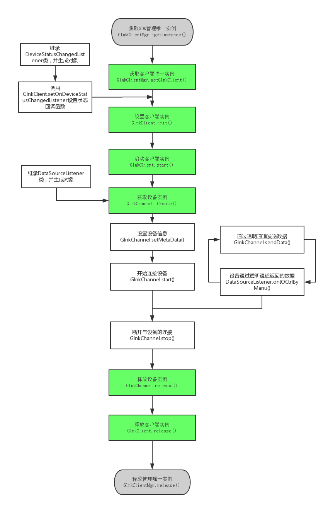

透明通道
流程图如下

Code
#include "GlnkClientMgr.h"
#include "glnk_client.h"
#include "DataSourceListener2.h"
#include "DeviceStatusChangedListener.h"
#include "glnk_client_GlnkChannel.h"
#include "glnk_client_LanSearchIndep.h"
#include "glnk_utils.h"
#include "OnLanSearchListener.h"
#include "glnk_errno.h"
#ifdef WIN32
#pragma comment(lib, "glnkclient.lib")
#pragma comment(lib, "libglnkcclient.a")
#endif
class DeviceStatus :public DeviceStatusChangedListener
{
virtual void onChanged(const char* gid, int status)
{
printf("[测试代码]%s 状态码为：%d\n", gid, status);
}
};
class DataSource : public DataSourceListener
{
virtual void onConnecting(){
printf("[测试代码]开始连接设备\n");
}
virtual void onConnected(int mode, const char* ip, unsigned short port){
printf("[测试代码]连接完成，连接模式为：%d , 设备ip：%s, 设备端口： %d \n", mode, ip, port);
}
virtual void onModeChanged(int mode, const char* ip, unsigned short port){
printf("[测试代码]连接模式更改，连接模式为：%d , 设备ip：%s, 设备端口： %d \n", mode, ip, port);
}
virtual void onDisconnected(int errcode) {
printf("[测试代码]连接被非主动断开，断开码:%d\n", errcode);
}
virtual void onReConnecting() {
printf("[测试代码]正在重新连接\n");
}
virtual void onAuthorized(int result){
printf("[测试代码]登录设备反馈码：%d\n", result);
}
virtual void onDataRate(unsigned int bytesPersecond) {
printf("[测试代码]每秒流量为:%d\n", bytesPersecond);
}
virtual void onAVStreamFormat(void *data, unsigned int length) {
GlnkStreamFormat format = { 0 };
int result = getGlnkStreamFormat(&format, data, length);
printf("[测试代码]此处获取音视频信息\n");
}
virtual void onIOCtrlByManu(const void *data, unsigned short length){
printf("[测试代码]设备通过透明通道返回的数据\n");
}
virtual void onVideoData(const void *data, unsigned int length, unsigned int frameIndex, unsigned int timestamp, int isIFrame) {}
virtual void onAudioData(const void *data, unsigned int length, unsigned int timestamp) {}
virtual void onRemoteFileSearchResp(int result, int count){}
virtual void onRemoteFileSearchItem(const char *framename, int recordType,
int startYear, int startMonth, int startDay, int startHour, int startMinute, int startSecond, int startMs,
int endYear, int endMonth, int endDay, int endHour, int endMinute, int endSecond, int endMs) {}
virtual void onRemoteFileResp(int version, int result, int fileDuration) {}
virtual void onRemoteFileEOF(){}
virtual void onRemoteFileCtrlResp(int result, int ctrlCmd) {}
virtual void onTalkingResp(int result, int audiofmt, int audioChannels, int audioSampleRate, int audioBitsPerSample){}
virtual void onKeepliveResp(int result){}
virtual void onVideoDataManu(const void *data, unsigned int length, const void *frameInfo, unsigned int infoLength) {}
virtual void onAudioDataManu(const void *data, unsigned int length, const void *frameInfo, unsigned int infoLength) {}
virtual void onIOCtrl(unsigned short type, const void *data, unsigned short length) {}
};
int main()
{
const char* gid[] = { "bl06fb5c4x", "tt0xx244f8" };
GlnkClient* client = NULL;
GlnkChannel* channel = NULL;
DeviceStatus* l = new DeviceStatus;
DataSource* ds = new DataSource;
GlnkClientMgr* clientMgr = GlnkClientMgr::getInstance();
if (clientMgr)
{
client = clientMgr->getGlnkClient();
if (client)
{
if (-1 == client->init("Demo", "20150914", "1234567890", 1, 1))//设置环境
goto err;
if (-1 == client->setOnDeviceStatusChangedListener(l))
goto err;
if (-1 == client->setStatusAutoUpdate(1))
goto err;
if (-1 == client->start())
goto err;
int re = 0;
for (int i = 0; i < 2; i++)
re = client->addGID(gid[i]);
channel = GlnkChannel::Create(client, ds);
if (channel)
{
re = channel->setMetaData("bl06fb5c4x", "admin", "admin", 0, 3, 2);
re = channel->start();
getchar();
//re = channel->sendData(data, size);//发送透明通道数据
getchar();
}
}
}
err:
if (channel)
{
channel->stop();
channel->release();
}
if (client)
client->release();
if (clientMgr)
clientMgr->release();
delete l;
delete ds;
return 0;
}